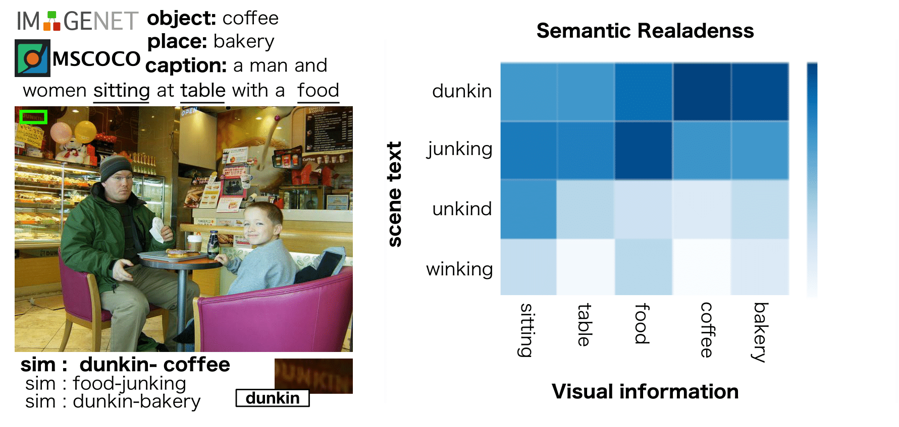
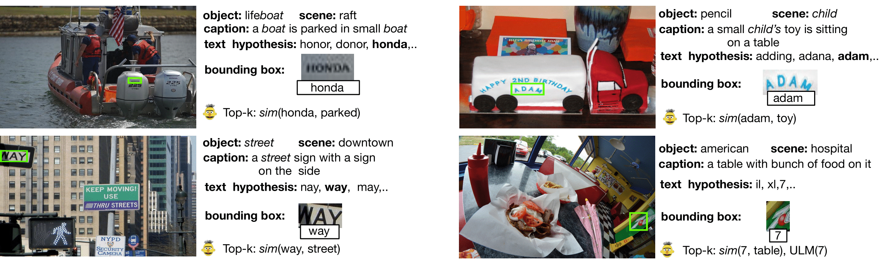

Textual Visual Semantic Dataset for Text Spotting |
| Ahmed Sabir, Francesc Moreno-Noguer, Lluís Padró |

|
|
|
|
Text Spotting in the wild consists of detecting and rec-ognizing text appearing in images (e.g., signboards, traffic signals or brands in clothing or objects). This is a challenging problem due to the complexity of the context where texts appear (uneven backgrounds, shading, occlusions, perspec-tive distortions, etc.). Only a few approaches try to exploitthe relation between text and its surrounding environmentto better recognize text in the scene. In this paper, we propose a visual context dataset for Text Spotting in the wild,where the publicly available dataset COCO-text ( Veit al., 2016) has been extended with information about the scene (such asobjects and places appearing in the image) to enable re-searchers to include semantic relations between texts andscene in their Text Spotting systems, and to offer a commonframework for such approaches. For each text in an image, we extract three kinds of context information: objectsin the scene, image location label and a textual image de-scription (caption). We use state-of-the-art out-of-the-box available tools to extract this additional information. Sincethis information has textual form, it can be used to leveragetext similarity or semantic relation methods into Text Spotting systems, either as a post-processing or in an end-to-end training strategy
|
We have proposed a dataset that extends COCO-text with visual context information, that we believe useful for the text spotting problem. In contrast to the most recent method (Prasad al., 2018) that relies on limited classes of context objects anduses a complex architecture to extract visual information,our approach utilizes out-of-the-box state-of-the-art tools.Therefore, the dataset annotation will be improved in thefuture as better systems become available. This dataset can be used to leverage semantic relation between image con-text and candidate texts into text spotting systems, either as post-processing or end-to-end training. We also use our dataset to train/tune an evaluate existing semantic similarity systems when applied to the task of re-ranking text hypothesis produced by a text spotting baseline, showing that it canimprove the accuracy of the original baseline between 2 and3 points. Note that there’s a lot of room for improvement upto 7.4 points in a benchmark dataset. |
DatasetWe proposed a variation of the COCO-text dataset and baseline BERT  Training dataCOCO=text
word, objects, places
airfrance,airliner,airfield
2010,microwave,utility room
kefalotyri,radio,storage room
stop,canoe,playground
l-17,wing,heliport
gree,street,skyscraper
|
|
with CaptionCOCO-text
label, word, caption
1,parking,a street sign with a sign on the side of it
1,chase,a man is playing tennis on a tennis court (tennis sponspr)
0,sq,a small child is sitting on a couch with a laptop
1,paper,a desk with a laptop and a mouse on it
1,3,a parking meter with a parking meter on it
0,ie,a woman holding a pink umbrella in her hand
|
|
TestICDAR-17
word, caption
pizza, a person cutting a pizza with a fork and knife
suit, a person in a suit and tie sitting with his hands between his legs.
paddle, a person riding a colorful surfboard in the water.
|
|
TestICDAR-17
word, caption
pizza, a person cutting a pizza with a fork and knife
suit, a person in a suit and tie sitting with his hands between his legs.
paddle, a person riding a colorful surfboard in the water.
|
|
Object-and-text-co-occCOCO-text
word, visual
stop, street
cable, remote
airways, airliner
4, volleyball
food, broccoli
|
Contact: Ahmed Sabir